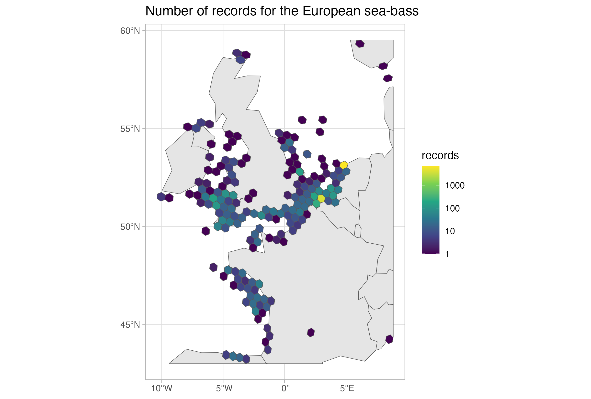
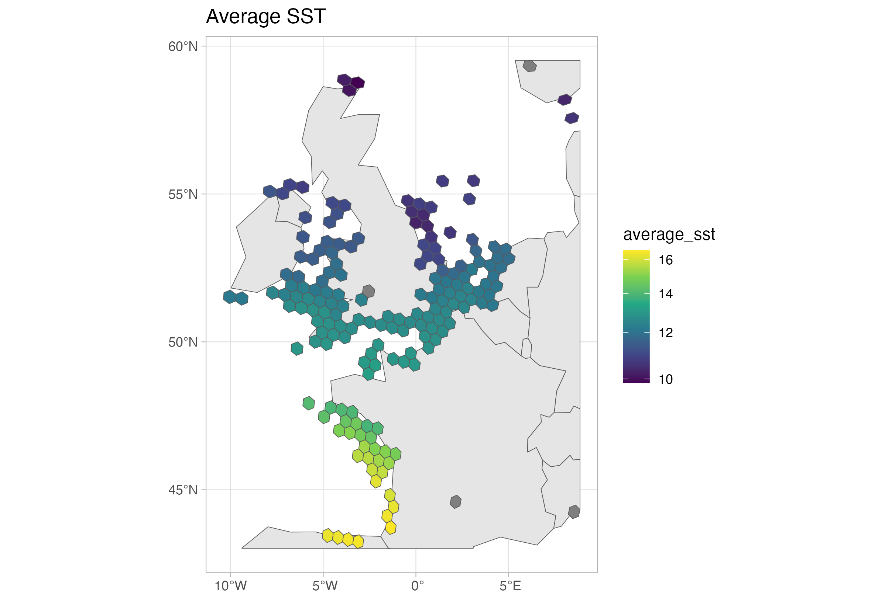

Using DuckDB to query the OBIS occurrence dataset - Part 3 (`duckplyr` package)
OBIS now has a occurrence dataset in GeoParquet format, but to work with large datasets you need the right tools. Here we explore how you can use DuckDB to (very) quickly retrieve data from this resource.
duckplyr
In the two previous tutorials we learned about how to use DuckDB for querying the Parquet exports and about the DuckDB spatial extension. Here we will explore the R package duckplyr, a drop-in replacement for DuckDB on R which uses the tidyverse grammar.
Again, we will work with a local copy of the occurrence dataset, which you can download here: https://obis.org/data/access/. You can also explore together through the Jupyter Notebook (download it locally or open it through Google Colab by clicking here).
We will work with the European sea-bass Dicentrarchus labrax. Let’s start by simply getting all records for it.
suppressPackageStartupMessages(library(duckplyr)) # For queries
suppressPackageStartupMessages(library(tictoc)) # To get timings
suppressPackageStartupMessages(library(sf)) # To later work with the spatial results
suppressPackageStartupMessages(library(ggplot2)) # For plotting
# Put here the path to your downloaded occurrence dataset
# In this case we need to add *.parquet
fe_path <- "/Volumes/OBIS2/obis_20250318_parquet/occurrence/*.parquet"
full_export <- read_parquet_duckdb(fe_path)
head(full_export)
# A duckplyr data frame: 283 variables
dataset_id id acceptedNameUsage acceptedNameUsageID accessRights aphiaid
<chr> <chr> <chr> <chr> <chr> <dbl>
1 00017595-e01… e3aa… <NA> <NA> http://crea… 126436
2 00017595-e01… c0c1… <NA> <NA> http://crea… 126436
3 00017595-e01… 0122… <NA> <NA> http://crea… 126436
4 00017595-e01… 57bd… <NA> <NA> http://crea… 126436
5 00017595-e01… 98ab… <NA> <NA> http://crea… 126436
6 00017595-e01… b142… <NA> <NA> http://crea… 126436
# ℹ 277 more variables: areas <list>, associatedMedia <chr>,
# associatedOccurrences <chr>, associatedOrganisms <chr>,
# associatedReferences <chr>, associatedSequences <chr>,
# associatedTaxa <chr>, basisOfRecord <chr>, bathymetry <dbl>, bed <chr>,
# behavior <chr>, bibliographicCitation <chr>, brackish <lgl>, caste <chr>,
# catalogNumber <chr>, class <chr>, classid <dbl>, collectionCode <chr>,
# collectionID <chr>, continent <chr>, coordinatePrecision <chr>, …
Note that differently from our previous tutorials, in this case duckplyr provides you with an overview (a sample) of the dataset once you open it. So far, we have not done any query. Let’s proceed.
species_id <- 126975
seabass_rec <- full_export |>
select(aphiaid, occurrenceID) |>
filter(aphiaid == species_id) |>
collect()
head(seabass_rec)
# A tibble: 6 × 2
aphiaid occurrenceID
<dbl> <chr>
1 126975 Trieste_1902_126975
2 126975 Trieste_1903_126975
3 126975 Trieste_1904_126975
4 126975 Trieste_1905_126975
5 126975 Trieste_1906_126975
6 126975 Trieste_1907_126975
nrow(seabass_rec)
[1] 14631
We quickly got all records for the species. Under the hood, duckplyr is doing a SQL call just as we did on previous tutorials. You can check the query in two ways - using explain() or show_query()
full_export |>
select(aphiaid, occurrenceID) |>
filter(aphiaid == species_id) |>
explain()
┌───────────────────────────┐
│ READ_PARQUET │
│ ──────────────────── │
│ Function: │
│ READ_PARQUET │
│ │
│ Projections: │
│ aphiaid │
│ occurrenceID │
│ │
│ Filters: │
│ "r_base::=="(CAST(aphiaid │
│ AS DOUBLE), 126975.0) │
│ │
│ ~277012 Rows │
└───────────────────────────┘
full_export |>
# To use show_query, we first need to convert to tbl, the format used
# by the package dbplyr
as_tbl() |>
select(aphiaid, occurrenceID) |>
filter(aphiaid == species_id) |>
show_query()
<SQL>
SELECT aphiaid, occurrenceID
FROM as_tbl_duckplyr_WK30bGTxN0
WHERE (aphiaid = 126975.0)
By checking the queries you might notice that sometimes the queries are overly complex. But even with that, the package make it easier to do the queries, since it uses a grammar that is well know by R users.
Now, we will do a more complex query. Aggregate by year, and get the number of records.
seabass_rec_year <- full_export |>
select(aphiaid, occurrenceID, date_year, sst) |>
filter(aphiaid == species_id) |>
filter(!is.na(date_year)) |>
group_by(date_year) |>
summarise(
records = n()
) |>
collect()
tail(seabass_rec_year, 3)
# A tibble: 3 × 2
date_year records
<dbl> <int>
1 2021 632
2 2022 221
3 2023 213
Now, and about the extensions? You can use them as usual! For example, to install the httpfs extension to work with online data you simply use db_exec("INSTALL httpfs; LOAD httpfs;"). Now we will try to use the spatial extension, that we saw on the last tutorial:
# Install the extension
db_exec("INSTALL spatial; LOAD spatial;")
sel_area <- "POLYGON ((-14.414063 43.325178, 9.140625 43.325178, 9.140625 60.06484, -14.414063 60.06484, -14.414063 43.325178))"
seabass_rec_geom <- full_export |>
select(aphiaid, occurrenceID, date_year, sst, geometry) |>
filter(aphiaid == species_id) |>
filter(!is.na(date_year)) |>
filter(ST_Intersects(geometry, ST_GeomFromText(sel_area))) |>
collect()
# Error in `filter()`:
# ℹ In argument: `ST_Intersects(geometry, ST_GeomFromText(sel_area))`.
# Caused by error in `ST_Intersects()`:
# ! could not find function "ST_Intersects"
# Run `rlang::last_trace()` to see where the error occurred.
As you see it fails. That is because ST_Intersects is not an R function, but a DuckDB extension function. How can we deal with that? We have to use the dbplyr capabilities instead. If you convert to a tbl object, you can then pass arbitrary functions to it. If it is not found in R, it will assume it is a DuckDB function.
seabass_rec_geom <- full_export |>
# convert to tbl, the format used by the package dbplyr
as_tbl() |>
# Do the queries
select(aphiaid, occurrenceID, date_year, sst, geometry) |>
filter(aphiaid == species_id) |>
filter(!is.na(date_year)) |>
# It will assume it is a DuckDB function
filter(ST_Intersects(geometry, ST_GeomFromText(sel_area))) |>
#show_query() # If you want to check the query
as_duckdb_tibble() |> # Go back to duckplyr, in this case not necessary as
# we are not doing further queries
collect() # Materialize call
head(seabass_rec_geom, 3)
# A tibble: 3 × 5
aphiaid occurrenceID date_year sst geometry
<dbl> <chr> <dbl> <dbl> <list>
1 126975 IMR2017314-20801-126975 2017 10.4 <raw [32]>
2 126975 IMR9536-20181-56015-126975 2018 NA <raw [32]>
3 126975 ft115bis_bottom_5:MiFish_UE-asv0687 2022 12.5 <raw [32]>
One other nice extension is the H3 extension, which introduces the H3 grid system to DuckDB. Let’s try it. We will do the same query as above, but now also get the H3 cells from it at the resolution 4, and plot the average SST and number of records in each heaxagon.
db_exec("INSTALL h3 FROM community; LOAD h3;")
seabass_rec_h3 <- full_export |>
# convert to tbl, the format used by the package dbplyr
as_tbl() |>
# Do the queries
select(aphiaid, occurrenceID, date_year, sst, geometry, decimalLongitude, decimalLatitude) |>
filter(aphiaid == species_id) |>
filter(!is.na(date_year)) |>
# It will assume it is a DuckDB function
filter(ST_Intersects(geometry, ST_GeomFromText(sel_area))) |>
# Note that the resolution should be passed as an integer, that is why we add the L to 4
mutate(h3_cell = h3_latlng_to_cell_string(decimalLatitude, decimalLongitude, 4L)) |>
mutate(h3_pol = h3_cell_to_boundary_wkt(h3_cell)) |>
#show_query() # If you want to check the query
as_duckdb_tibble() |> # Go back to duckplyr
group_by(h3_cell, h3_pol) |>
summarise(
records = n(),
average_sst = mean(sst, na.rm = T)
) |>
collect() # Materialize call
head(seabass_rec_h3, 3)
# A tibble: 3 × 4
# Groups: h3_cell [3]
h3_cell h3_pol records average_sst
<chr> <chr> <int> <dbl>
1 840983dffffffff POLYGON ((6.234412 59.515652, 5.864064 59… 1 NaN
2 8409933ffffffff POLYGON ((8.124682 57.683255, 8.027435 57… 1 10.6
3 84099e9ffffffff POLYGON ((7.739213 58.299457, 7.642413 58… 1 10.4
We can now plot it:
seabass_rec_h3_sf <- st_as_sf(
seabass_rec_h3, wkt = "h3_pol", crs = 4326
)
sf_use_s2(FALSE)
wrld <- rnaturalearth::ne_countries(returnclass = "sf")
wrld <- st_crop(wrld, seabass_rec_h3_sf)
ggplot() +
geom_sf(data = wrld, fill = "grey90") +
geom_sf(data = seabass_rec_h3_sf, aes(fill = records)) +
scale_fill_viridis_c(transform = "log10") +
theme_light() +
ggtitle("Number of records for the European sea-bass")
ggplot() +
geom_sf(data = wrld, fill = "grey90") +
geom_sf(data = seabass_rec_h3_sf, aes(fill = average_sst)) +
scale_fill_viridis_c(transform = "log10") +
theme_light() +
ggtitle("Average SST")


And that concludes our series about the use of DuckDB for querying the OBIS Parquet exports. We hope this will give you more tools to work with OBIS data.